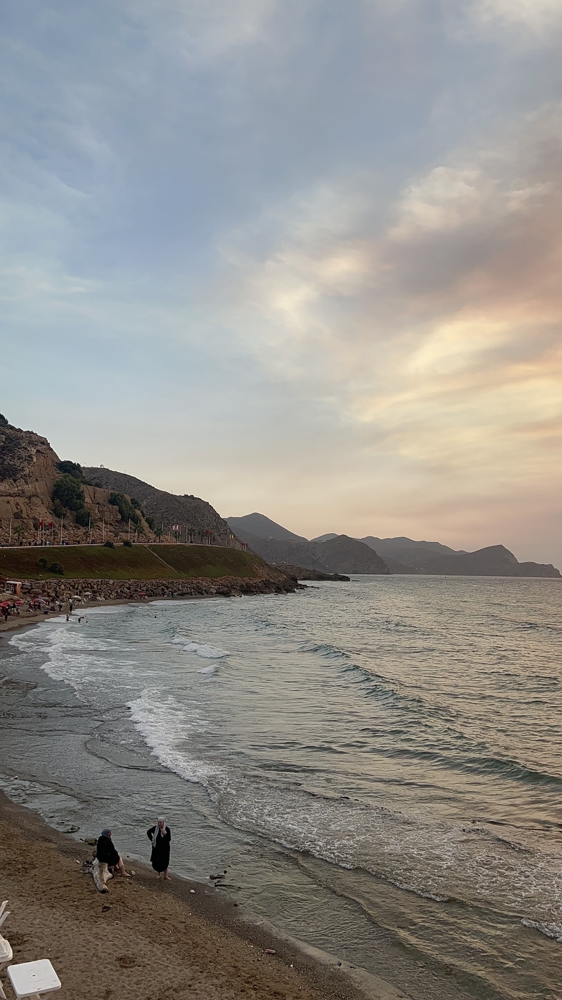

Marokko
Marokko staat bekend om zijn levendige cultuur en traditionele ambachten. Denk aan kleurrijke markten (zoals de beroemde souks van Marrakech), traditionele muziek, dans en prachtige handgemaakte tapijten en keramiek. De architectuur in Marokko is indrukwekkend, met intrigerende ontwerpen zoals de Medersa Ben Youssef in Marrakech, de Kasbahs in de woestijn, en de kenmerkende blauwe straten van Chefchaouen. Marokko biedt diverse landschappen, van de Sahara-woestijn tot het Atlasgebergte en de prachtige kustlijn. Bezoekers kunnen genieten van activiteiten zoals kamelentochten, trektochten in de bergen en ontspannen aan de Middellandse Zeekust.
Ik ben zelf van marrokaanse afkomst en ben vele malen in Marroko op vakantie geweest in de zomer. Dit waren altijd de onvergetelijke vakanties, ondanks dat je altijd hetzelfde dee was toch elke vakantie weer anders. Famillie, goed eten, strand dagen en een heerlijke marrokaanse thee.
Hierbij de bekendste plekken van Marokko:
1: Akchour; Watervallen
Mijn titel

Akchour is een schilderachtige locatie in Marokko, vooral bekend om zijn adembenemende natuurlijke schoonheid. Het bevindt zich in het Rifgebergte, niet ver van de stad Chefchaouen. Akchour staat bekend om zijn prachtige watervallen, heldere beekjes en weelderige groene landschappen. Een populaire trekpleister in Akchour is de zogenaamde "God's Bridge" of "Puente de Dios," een natuurlijke rotsbrug die over een heldere rivier loopt. Het is een geweldige plek voor wandelaars en natuurliefhebbers om te verkennen. Daarnaast kun je genieten van wandelingen door de bergen en de prachtige valleien.De watervallen van Akchour liggen op zo’n 45 minuten rijden van de blauwe stad Chefchaouen en op 2,5 uur rijden van Tanger.
2: Tanger
Mijn titel

Tanger, is een fascinerende stad in het noorden van Marokko, gelegen aan de Straat van Gibraltar. Het is een stad die een rijke geschiedenis en een unieke mix van culturen heeft. Tanger staat bekend om zijn levendige medina, waar smalle straatjes vol zijn met kraampjes die een scala aan goederen verkopen, van kruiden en textiel tot ambachtelijke producten. De medina ademt een charmante, ouderwetse sfeer uit. Naast de historische aspecten heeft Tanger ook een moderne kant, met chique boetieks, restaurants en kunstgalerijen. Het heeft een kosmopolitische uitstraling, mede doordat het historisch gezien een ontmoetingspunt was van verschillende culturen en beschavingen. Een opvallend kenmerk van Tanger is ook de ligging aan de kust, met prachtige uitzichten op de Middellandse Zee. Het is een stad waar de oude en nieuwe wereld elkaar ontmoeten, wat het tot een boeiende bestemming maakt.
3: Al Hoceima
Mijn titel
Het azuurblauwe water van de Middellandse Zee, de rustige golven en de kustlijn die de prachtige baaien van Marokko vormen, schilderen een betoverend beeld van de natuurlijke schoonheid van Al Hoceima. Het lijkt bijna op een aards paradijs. Op de uitgestrekte stranden kun je ontspannen op een ligstoel en genieten van de zon en haar weldadige stralen. Onder de altijd heldere hemel lijkt luiheid de norm van de dag te zijn! Echter, Al Hoceima is veel meer dan alleen een zonnige badplaats. De omgeving herbergt verborgen schatten die avontuurlijke zielen met plezier zullen ontdekken. Vlak buiten de stad, bij het vissersdorpje Torres de Alcala, staan de overblijfselen van vijf oude wachttorens, gebouwd door de Portugezen tijdens hun bezetting van de regio. Tegenwoordig biedt de locatie aangename wandelingen voor liefhebbers van historische architectuur. In de stad zelf is de haven een bezoek waard.
5: Fez
Mijn titel
Fez is een van de oudste en meest fascinerende steden in Marokko. Het staat bekend om zijn historische betekenis, prachtige architectuur en levendige cultuur. De medina van Fez, die op de Werelderfgoedlijst van UNESCO staat, is een doolhof van smalle steegjes, traditionele markten (souks) en oude ambachten. Het is een van de grootste autovrije stadscentra ter wereld en biedt een ongelooflijke reis terug in de tijd. De prachtige moskeeën, paleizen en fonteinen getuigen van de rijke geschiedenis en architectonische pracht van de stad. Een hoogtepunt van Fez is de Universiteit van Al Quaraouiyine, die wordt beschouwd als de oudste universiteit ter wereld die nog steeds in gebruik is. Het dateert uit de 9e eeuw en heeft een indrukwekkende geschiedenis van wetenschappelijk en intellectueel erfgoed. Fez staat ook bekend om zijn traditionele ambachten, zoals het bewerken van leer, het weven van tapijten en het vervaardigen van keramiek. Een bezoek aan de leerlooierijen van Fez biedt een boeiende kijk op dit eeuwenoude ambacht. De stad ademt een unieke sfeer uit, waar het moderne leven samensmelt met eeuwenoude tradities. Fez is echt een schatkist vol culturele, historische en artistieke schatten.
6: Casablanca; Hassan II moskee
Mijn titel
In Casablanca, Marokko, staat de Hassan II-moskee, een indrukwekkend modern bouwwerk dat op initiatief van koning Hassan II, de voormalige koning van Marokko, is opgericht. Het ontwerp is afkomstig van de Franse architect Michel Pinseau en de constructie werd uitgevoerd door Bouygues. Deze moskee is de op één na grootste ter wereld, na de Masjid Al-Haram in Mekka. Gelegen aan de kust, biedt de moskee een adembenemend uitzicht op de Atlantische Oceaan. Wat deze moskee extra bijzonder maakt, is het gigantische glazen vloeroppervlak, geschikt voor 25.000 bezoekers, dat een panoramisch uitzicht op het water biedt. Zowel binnen als buiten is er ruimte voor gebed, met een capaciteit van 25.000 mensen binnen en 85.000 mensen buiten. De minaret van de moskee is met een hoogte van 210 meter de hoogste ter wereld. Een architecturaal meesterwerk dat de grootsheid van het geloof en de moderne esthetiek combineert.n waren historisch gezien populaire zomerverblijven voor de rijke inwoners van Istanbul. Tegenwoordig zijn ze een ontsnapping aan de drukte van de stad, met schilderachtige straatjes, historische huizen en prachtige uitzichten op de zee. Veel mensen bezoeken de eilanden voor een dagtocht om te genieten van de rustige sfeer en de mooie omgeving.
Conclusie
Marokko is de ideale vakantieplek om tot rust te komen en nieuwe plekken ontdekken. Van de warme Sahara of naar het koude Ifrane. Je kan zelf bekijken wat jij fijn vind. Vliegen naar Marokko is wel prijzig, vooral in de zomer, probeer daarom zo vroeg mogelijk te boeken als je in de zomer het land wilt bezoeken. De meeste marrokanen uit Europa, die rijden ook met de auto naar marokko en nemen de boot vanuit een van de steden in Zuid-Spanje.
Het eten in Marokko is overheerlijk denk aan, tajine, couscous, msemen,harira en nog veel meer. Het eten en drinken is goedkoper dan in Nederland, maar de prijzen per stad in Marokko verschillen ook heel erg. Als voorbeeld is Marrakech duurder dan in de stad Nador.